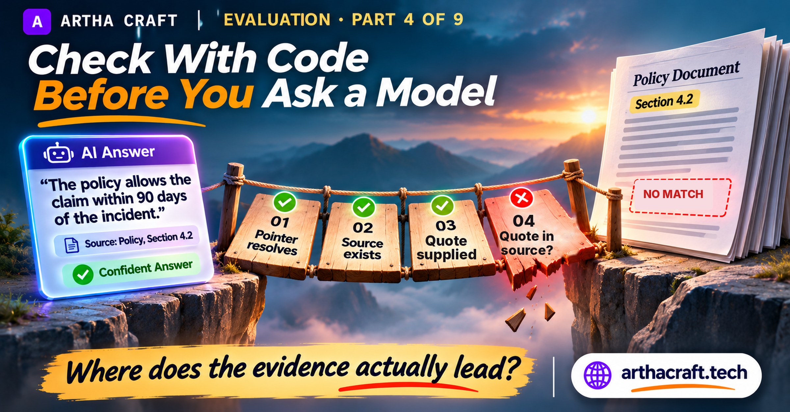

A pointer
Which document, which section or page, which record.
Confident, well-formed output can still be invented. Make every claim show its evidence, check that evidence against the source with plain code, and label every output with what produced it.

In 2023, two lawyers in New York filed a brief in a personal-injury case against an airline. It cited decisions with names, docket numbers, quotes and internal citations, and it looked like any other brief. Six of those decisions did not exist; a chatbot had produced them. When the court finally read one of the invented opinions, the judge wrote: "Its legal analysis is gibberish." [1]
The detail that matters for anyone building with LLMs comes earlier. Before filing, the lawyer asked the chatbot whether one of the cases was real. It said yes. [1] The model was asked to vouch for its own evidence, and it did, confidently. The court fined the lawyers and their firm $5,000 and ordered them to write to the judges falsely named as authors.
It was not a one-off. A public tracker of court filings with AI-fabricated content listed more than a thousand U.S. cases by mid-2026. [2] Nor is the problem confined to law. When researchers audited four AI search engines that cite their sources, only about half of the generated sentences were fully supported by their citations, and roughly a quarter of the citations did not support the sentence they were attached to. [3]
Reading would not have caught any of these failures, because the output was well formed, fluent and certain. What exposes it is one question, show me where that came from, answered by checking the source rather than by asking the model.
The model will vouch for its own evidence. That is not a check.
We saw the same pattern in insurance work. The output was well structured, every field was filled and the tone was certain, so nothing in its shape suggested a problem. The problems surfaced only when someone asked where a statement came from and the answer did not hold up.
In insurance, "where did that come from" has a precise answer. A coverage statement comes from a specific clause in a specific policy form or endorsement. A claims finding comes from a specific note, document or line in the file. An underwriting conclusion comes from a specific guideline. If the model cannot point to that place, the statement is an opinion, however well it is written.
So the request for evidence belongs in the contract, written down, rather than in a reviewer's head. Every claim in the output carries two things:
Which document, which section or page, which record.
The text it relied on, quoted verbatim from the input.
The contract also needs a legitimate way out. If the only acceptable answer is one with a citation, a model under pressure will produce a citation. So "not enough evidence in the material provided" must count as a valid, passing answer rather than a failure. It is the same out-of-bounds handling from Part 2, applied to individual claims.
Model vendors give similar advice. One provider's guidance on reducing hallucinations recommends letting the model say it does not know, having it pull word-for-word quotes before answering, and having it cite a quote for each claim and retract any claim it cannot support. It also says these techniques reduce hallucinations but do not remove them. [4] Even so, a model retracting its own unsupported claims is still a model checking itself, so the next step is to check its evidence without asking it.
Scoring whether an answer is faithful to its sources is an established metric in evaluation tools. [5] What our insurance work added was a view on where it belongs: in a rule every output must meet, checked by code on every call, rather than in a score on a dashboard.
Once every claim carries a pointer and a quote, most of the evidence check is ordinary code, with no model, reviewer or judgement involved:
These checks are cheap, return the same answer every time, and run in milliseconds. They would have caught the opening case: none of the six decisions existed in any source, so none of the pointers could resolve.
Some platforms now do part of this for you. One provider's citations feature returns pointers "guaranteed to contain valid pointers to the provided documents," yet its own documentation still tells developers to check in code that every field has a value and a citation. [6] A platform feature narrows the problem, but you still need the check.
Code has a limit, though. It can prove the evidence exists, but not that the evidence supports the claim, and a real clause attached to the wrong conclusion passes every check above. Telling the two apart takes judgement, which is the subject of Part 5.
The evidence check sits on top of simpler ones that every output should pass first. In the terms of Part 1, these are the contract and grounding checks, at the call level:
The output parses and matches the agreed format.
Nothing the contract demands is missing or empty.
The number of items is what was asked for, and categories come from the agreed list.
Amounts are within plausible limits, and dates are in order: an effective date before an expiry date.
Totals match their parts, and a "no exposure found" summary does not sit above three exposure findings.
No personal data that should have been masked, and nothing marked internal-only, such as reserve figures or investigation notes, in a draft meant for a customer.
None of these is clever. That is the point. They run first because they are cheap, and an output that fails one never reaches a reviewer or a model judge.
Every output an LLM produces comes from three things: the input, the prompt and the model. Of the three, the prompt is the one you control: it is version-controlled and changes only through an approved release (Part 3). Everything else can move without a release, so everything else gets recorded.
We record four things against every output: the input, masked where it holds personal data; the prompt version; the model version; and the output itself. Looking back, we would add two more:
Which checks ran, which passed, which failed, and against what tolerance.
Who or what accepted the output, and whether that was a system or a person.
When a case that used to pass starts failing, these labels tell you whether the input, the prompt or the model moved. When an auditor asks why an answer was given, they show what produced it and who accepted it.
Record the model version the platform reports for each call, not the one your configuration meant to use. Some short model names point to whatever snapshot is newest, and even a fixed model ID can shift slightly when the provider changes its infrastructure. [7] A label tells you what ran, though it does nothing to make the model stand still; Part 9 picks that up.
Companies in regulated industries may have no choice. The EU AI Act, for example, requires high-risk AI systems to "technically allow for the automatic recording of events (logs) over the lifetime of the system." [8] Whether your system falls under it is a question for your compliance team. The rigour should not wait for a regulator either way.
The checks in this article do not stop when testing ends. In evaluation they run against the golden set, and in production the same checks run on every response, before anyone sees it or any system acts on it.
When a check fails in production, the output is not shown as if nothing had happened. It goes to a person with the failed check and the labels attached, and the failure is logged. Over time the rate of failed checks becomes a production signal in its own right: if it rises with no release, something underneath has moved.
Labels and check results are audit evidence: what produced an answer, what it was checked against, and who accepted it.
An agent's evidence is what its tools returned. Check that every claim traces to a tool result the agent actually received, and run the checks between steps, not only at the end.
Showing the quote beside the claim lets a user verify in one click. The "not enough evidence" answer also has to read as useful rather than as an error.
The model will sound sure.
The format will look right.
The evidence is the one thing you can check.
Check it with code first. Spend human and model judgement only on what code cannot settle.
Jitander Chauhan